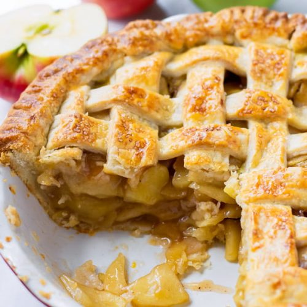

Apple Pie

The History of Apple Pie
To this day the earliest known recipe for a Apple Pie prototype
is dated back to the early 1800's, but by the 1920's Apple Pie was beloved
in America. This is where the phrase "About american as Apple Pie" originated from.
Ingredients
- Dough for double-crust pie
- 1/3 cup sugar
- 1/3 cup packed brown sugar
- 1/4 cup all-purpose flour
- 1 teaspoon ground cinnamon
- teaspoon ground ginger
- 1/4 teaspoon ground nutmeg
- 6 to 7 cups thinly sliced peeled tart apples
- 1 tablespoon lemon juice
- 1 tablespoon butter
- 1 large egg white
Steps
- Preheat oven to 375°. On a lightly floured surface, roll half of the dough to a 1/8-in.-thick circle;
transfer to a 9-in. pie plate.
Chill while preparing filling. In a small bowl, combine sugars, flour and spices.
In a large bowl, toss apples with lemon juice.
Add sugar mixture; toss to coat.
Add filling; dot with butter.
- Roll remaining dough to a 1/8-in.-thick circle.
Place over filling. Trim, seal and flute edge.
Cut slits in top. Beat egg white until foamy;
brush over crust.
If desired, sprinkle with turbinado sugar and ground cinnamon.
- Bake on the lowest rack 60-70 minutes, until crust is golden brown and filling is bubbly,
covering with foil halfway if crust begins to get too dark.
Cool on a wire rack.
If desired, serve with ice cream and caramel sauce.